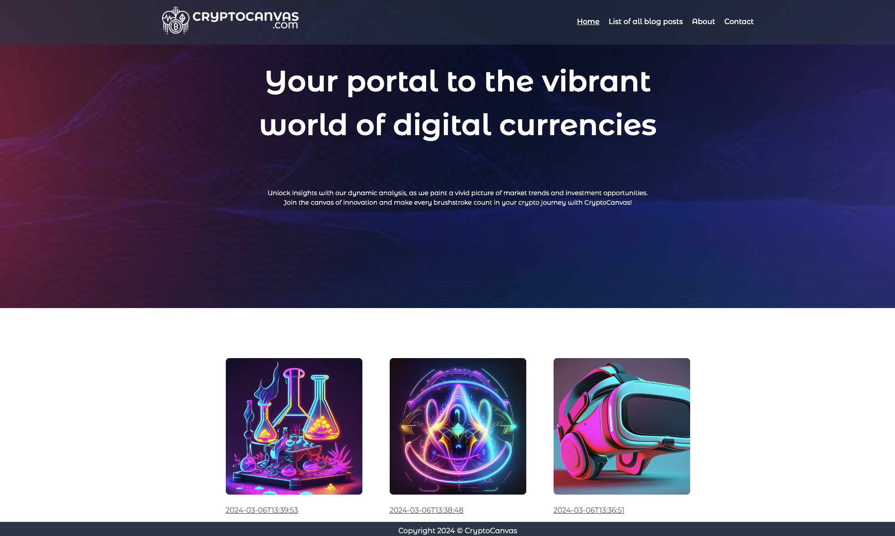
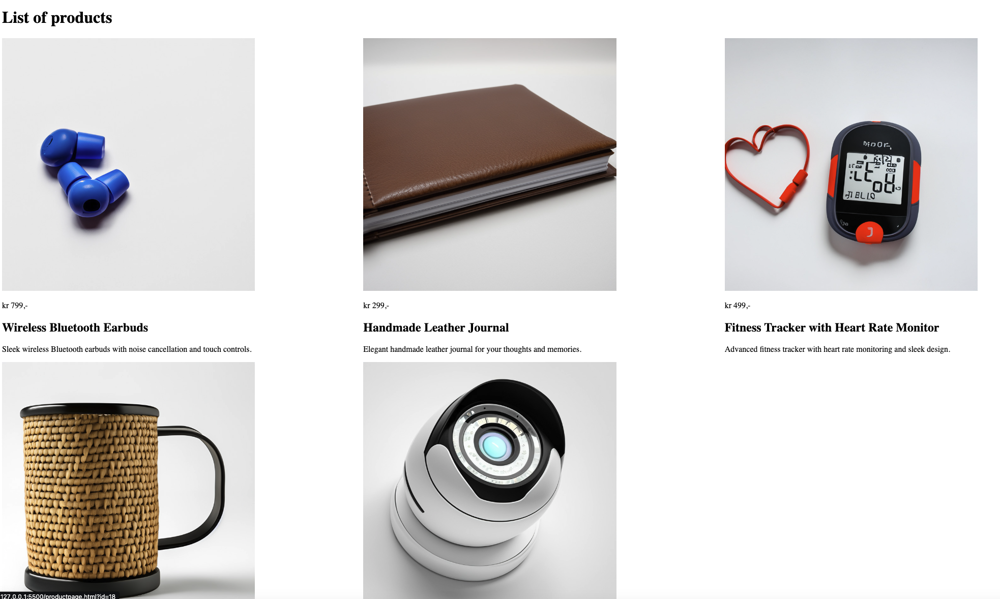
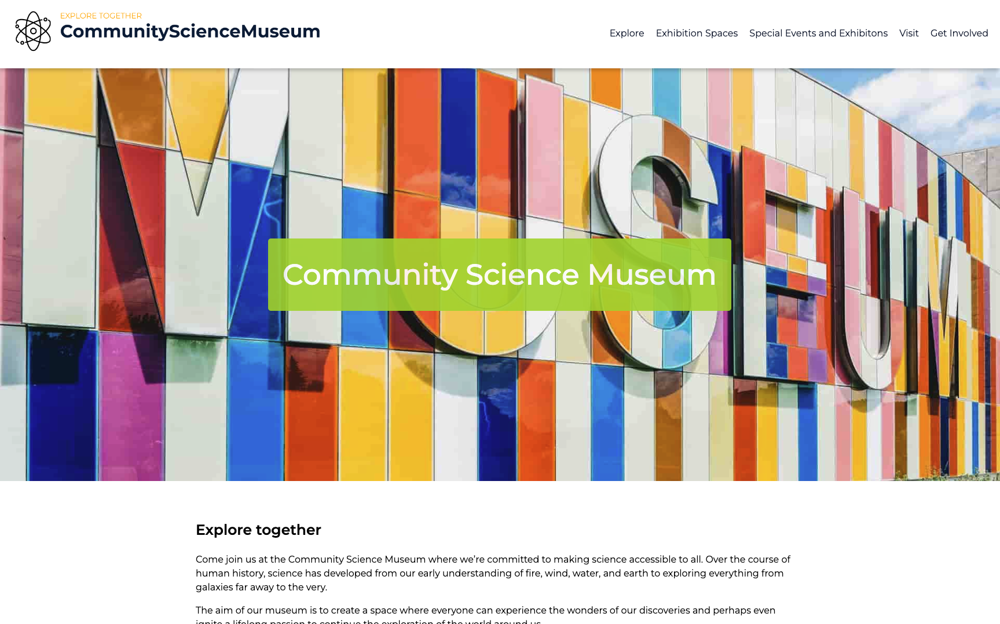

About Me
Hi, I'm Daniel Strandheim, a passionate web developer with a keen interest in creating dynamic and user-friendly websites. I've been working as a WordPress developer since 2018, and on top of that, I'm studying Front End development at Noroff University. I love working with HTML, CSS, and JavaScript to build projects that solve real-world problems. When I'm not coding, you can find me either working out or playing video games
Project Exam
A website that displays blog posts from a WordPress API with a slider carousel, blog list, and contact form.
GitHub Repo | Live SiteCross Course Project
This project fetches products from a WordPress API and displays them using HTML, CSS, and JavaScript.
GitHub Repo | Live SiteSemester Project
An informational website for a community science museum made with HTML and CSS.
GitHub Repo | Live Site